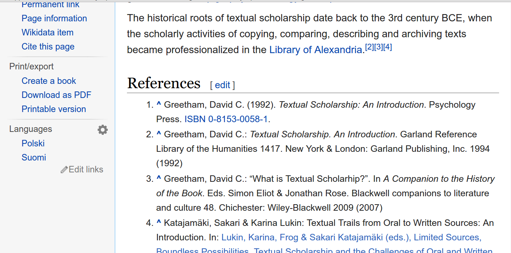
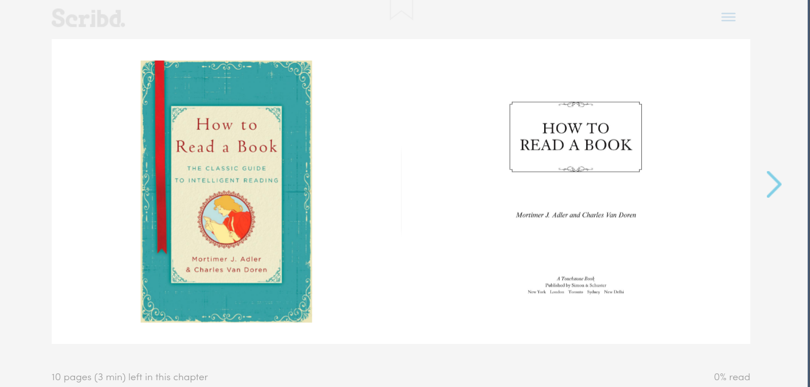
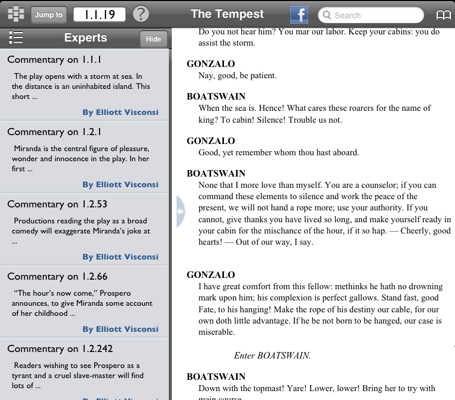
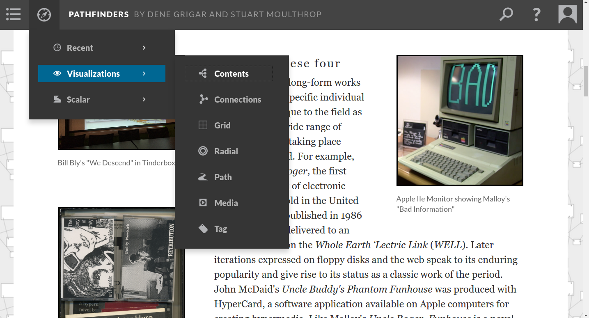
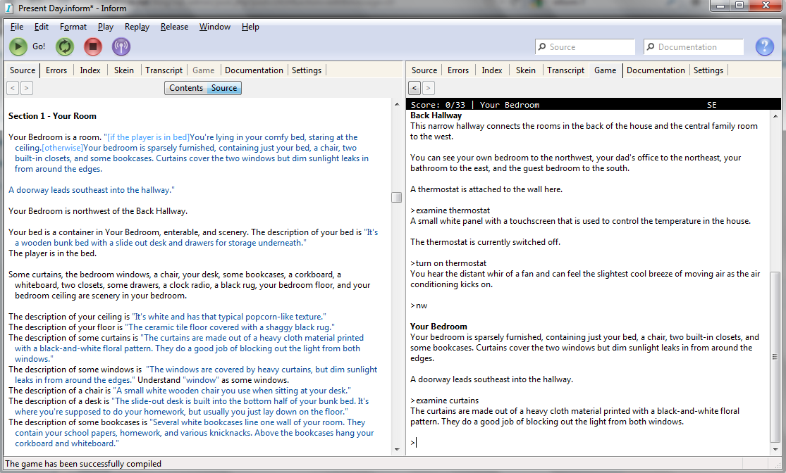

Ebooks as Applications
What can books do?
Print Culture
- Books have authors
- Books have editions
- Books can be shared


Presence
- Portability
- Markability
- Graspability
Embedded Literature




Ebooks as Applications
Mobile Apps
DEVICE 6

Folger editions

The Silent History
Crowdsourced Books
- Hacking the Academy
- Devonshire Manuscript
- Manifold Scholarship
Nonlinear Reading
Scalar

Twine

Inform

Ebooks as Code
GitBook

Notes
johns starts Nature of the Book in an interesting way he articulates all the affordances of the codex can lend, cannot declaim in public, cannot reprint, etc. when i read this first, there was an essential irony—was reading on the computer so if digital books are not "there" (Piper), where do you find them? books undergird the internet, they provide a stratum of authority the book is often embedded within an application these books do not have their own discrete affordances, their affordances are provided by the platform that frames them look at these examples: Google Books, Kindle
iPad applications crowdsourced books nonlinear reading twine git book > ebook as code
lori emerson, avoid magic plain text is "there" in a way that more complex forms are not we should cultivate a discomfort with complexity
books do stuff digitzation threateden a book's ability to do stuff these new applications have restored that ability books are still books
notes
the ebook is not an object, it is an act
or, perhaps, it is an object…in the technical sense, that of combining state and action
Nature of the Book (Johns) opens:
Pick up a modern book. This one will do: the one you are looking at right now. What sort of object is this?
Book Was There opens with discussion of St. Augustine's conversion, his use of codex (random selection, holding finger to mark place)
- the graspability of the book, in a material as well as spiritual sense
on the internet, the book is not at hand. the book undergirds
- books are like load-bearing struts, they hold up the edifice of the internet
digital books are not graspable
the open hand is the icon of the book
- book of hours (graspable)
- manicule
Book Was There: "Books are things that hold things…encapsulation"
A printed manicule directs the reader's attention in the margins of Terentius cum tribus commentis, 1501.
oroginal proposal
Code and the Codex: E-books as Applications
What, precisely, is a book? For long periods of history, books have been associated with discrete forms, such as the scroll and the codex. Over the past two decades, the popular conception of the book has been expanded to include a succession of specialized file formats, including .lit, .mobi, and .epub. While these "standard" e-book formats allowed for new affordances and reading modalities, e-books of this kind were still fundamentally recognizable as books. More recently, however, a variety of authorship and publishing approaches have emerged that blur the boundaries among applications, platforms, and books. These developments suggest a future in which books—and the experience of reading—will be more varied and less recognizable, and suggest new modes of interaction among readers, authors, and publishers.
For the Special Session on the E-book Revolution, I propose to look beyond standard and "enhanced" e-book formats to a new and expanding category of e-book-application hybrids. These include interactive applications such as The Silent History and Device6, crowdsourced book projects, and authoring platforms that allow for nonlinear reading experiences, such as Inform and Twine. I will also touch on the use of ebook-app hybrids in scholarly publishing, such as Scalar, the nonlinear authoring platform, and GitBooks, a version control powered writing collaboration tool. Finally, in exploring these emerging approaches to the book as a form, I will also draw on paratextual theory and the writings of Gérard Genette to sound out contemporary differences in the reception and consumption of books, using e-book/app hybrids as a point of reference to indicate how social conceptions of the book have both changed and remained the same.
Patrick Smyth
Patrick Smyth is a fourth-year doctoral student in English. His research focuses on Utopian thought and the history of science in 18th and 19th century British literature. As a digital humanist, Patrick is concerned with digital platforms for research and pedagogy. He is currently a developer on the NEH-funded DH Box, a cloud-based platform for accessing digital humanities tools, and has recieved a Provost’s Digital Innovation grant for an online archive of science fiction works. His most recent publication is “Ebooks and the Digital Paratext: Emerging Trends in the Interpretation of Digital Media” in Examining Paratextual Theory and Its Applications in Digital Culture. Patrick was a 2010 Fulbright Teaching Fellow in Berlin, Germany, and teaches composition and literature at Queens College.
links
DEVICE 6 The Silent History Hacking the Academy Social Edition of the Devonshire Manuscript Building Manifold Folger Luminary Shakespeare Apps
der bruder